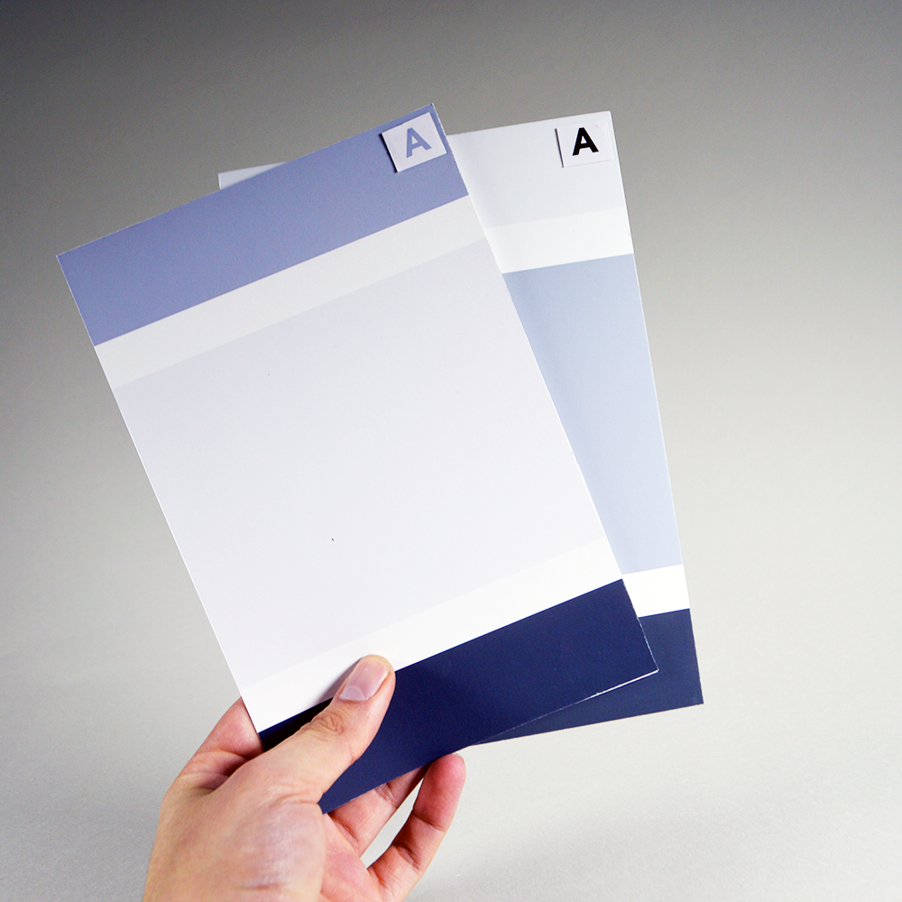
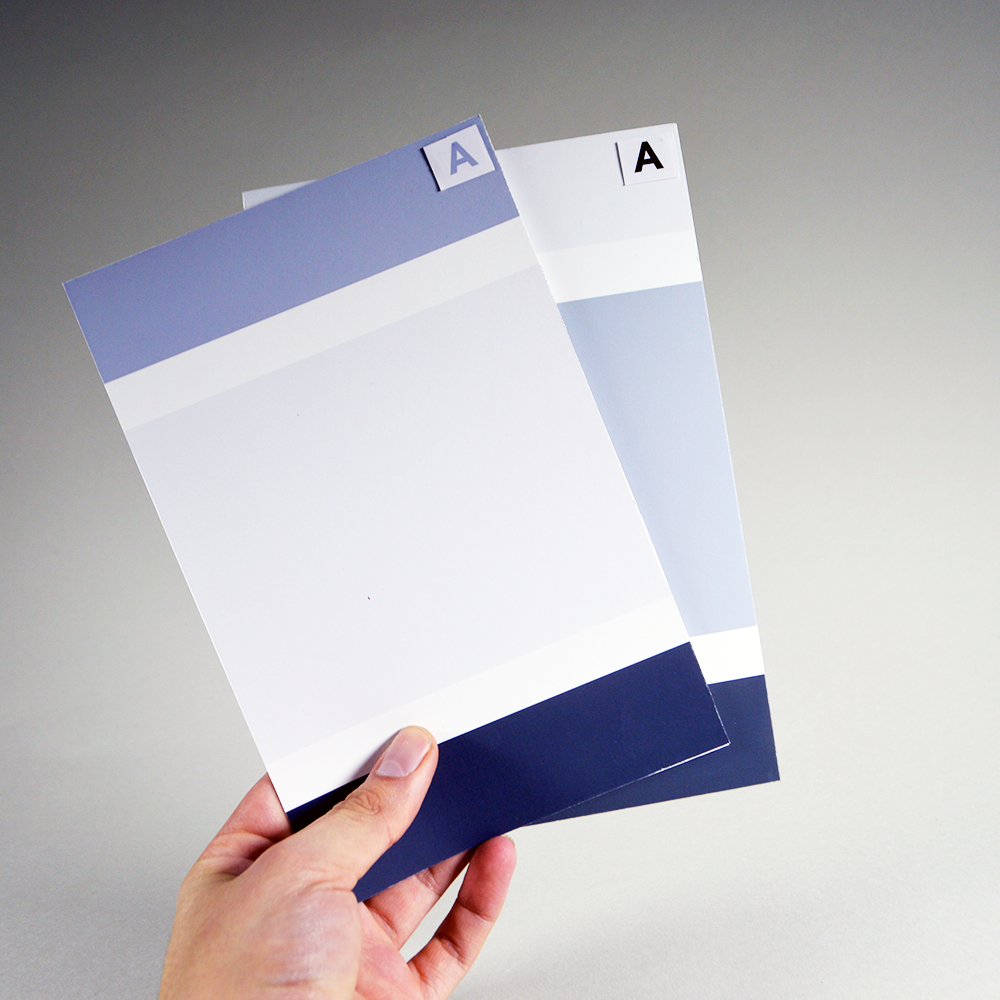
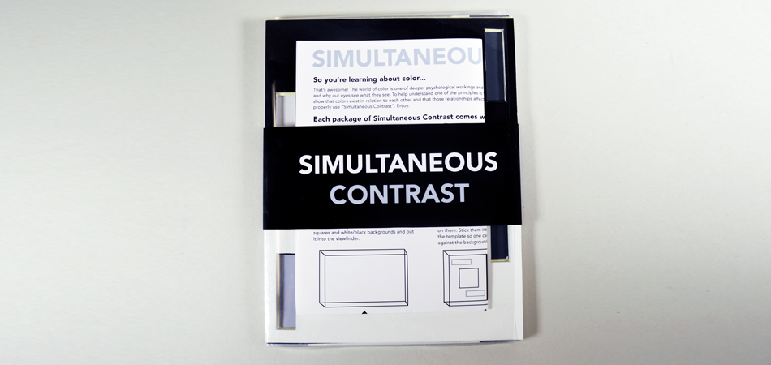
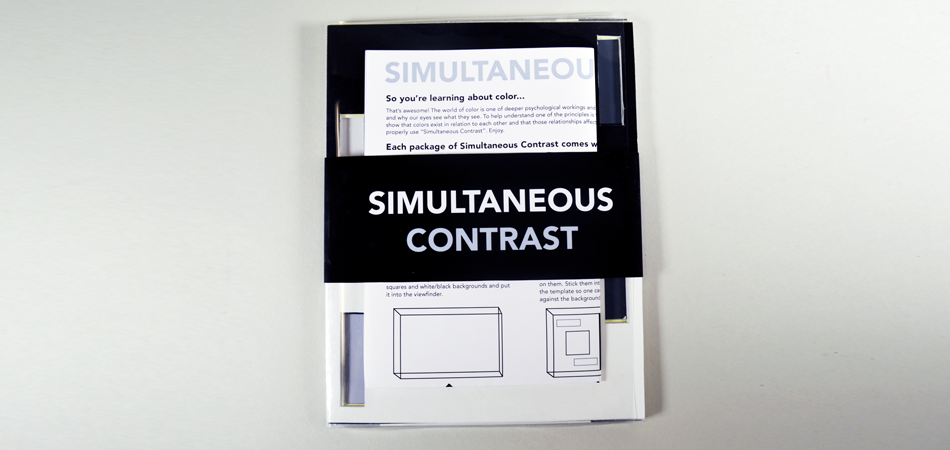

 

Assignment 3 : Simultaneous Contrast
This project started off with finding the grayscale values of:
- 25 percent
- 50 percent
- 75 percent
- 100 percent
and after finding these and matching them, taking the middle values of 25%, 50%, and 75% and finding similar values in a monochromatic pantone and then in an analogous setting where value changes by making the color warmer or cooler instead. Finally after all of this, we were then to match the swatches digitally for use in the project.
Now with these swatches, the true project can begin. Simultaneous Contrast is about placing colors on different background to give the illusion that they are of the same value.
I chose to realize this illusion by allowing the user to create it themselves through an interactive experience. I made a package called "Simultaneous Contrast" which comes with an instruction manual, 6 pairs of cards, 4 templates, and a clear case for all of it.
Quick synopsis: You take a template and stick it into the clear case, then take a matching pair of cards (i.e the two gray cards with As on them.) and stick the card with the light A in the white and the one with the dark A in the black background. After that you watch the illusion happen.
I would like to expand further on this assignment to make it something that is both educational and fun. I thought about maybe making a game out of it where two come packaged in a box, the letters off of the cards and people try and see who has the better eye for color and its effects.
I would also experiment more with the color to make the illusions stronger because as of right now, I feel that while the shift in color against the background isn't as noticeable as it could be.
//End of Assignment 3//